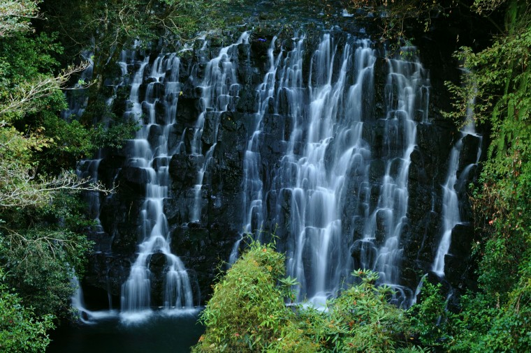

Elephant Falls

Elephant Waterfalls is a waterfall in the Central Highlands of Vietnam. It is located about 25 km from Da Lat on the Cam Ly river. The falls are described as one of the most beautiful of the Central Highlands.
A path with steps carved out into the slippery rocks leads to the foot of the falls.[1] Bats roam around the area, where they inhabit a cave under the waterfalls.[2]

HOW TO REACH ?
Nearest Airport: Shilong
Nearest Railway Station:Shilong
Nearest Bus Stand:Shilong